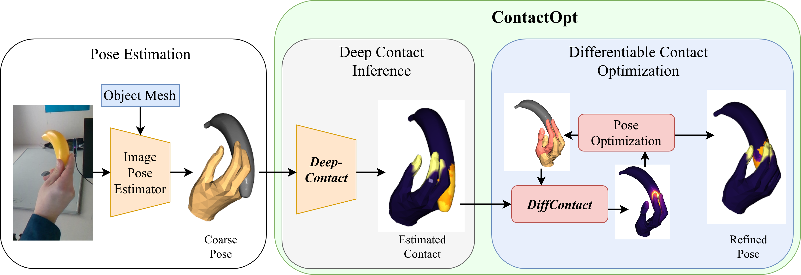

ContactOpt: Optimizing Contact to Improve Grasps
Patrick Grady, Chengcheng Tang, Christopher D. Twigg, Minh Vo, Samarth Brahmbhatt, Charles C. Kemp
Conference on Computer Vision and Pattern Recognition (CVPR) 2021

[Paper] [Supplementary] [Code] [Oral 5-Minute Talk]
Abstract
Physical contact between hands and objects plays a critical role in human grasps. We show that optimizing the pose of a hand to achieve expected contact with an object can improve hand poses inferred via image-based methods. Given a hand mesh and an object mesh, a deep model trained on ground truth contact data infers desirable contact across the surfaces of the meshes. Then, ContactOpt efficiently optimizes the pose of the hand to achieve desirable contact using a differentiable contact model. Notably, our contact model encourages mesh interpenetration to approximate deformable soft tissue in the hand. In our evaluations, our methods resulted in grasps that better matched ground truth contact, had lower kinematic error, and were significantly preferred by human participants.